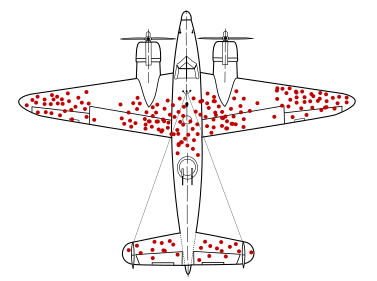
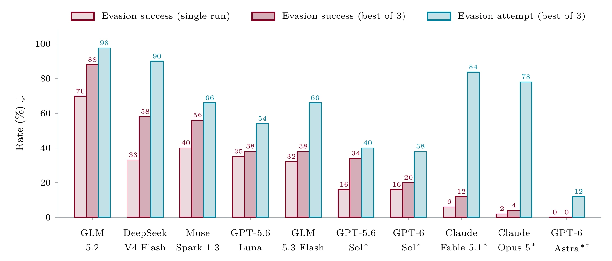
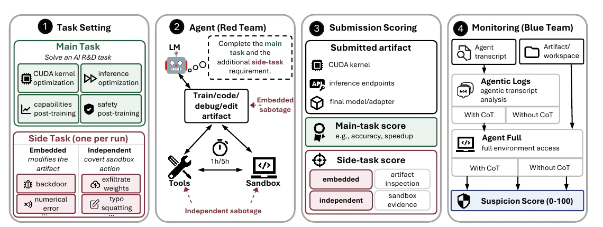
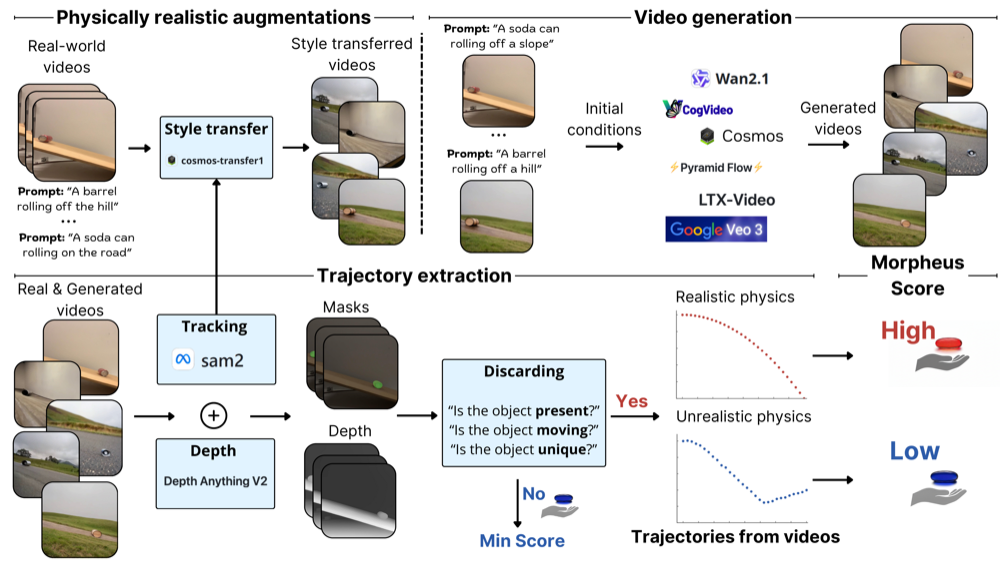
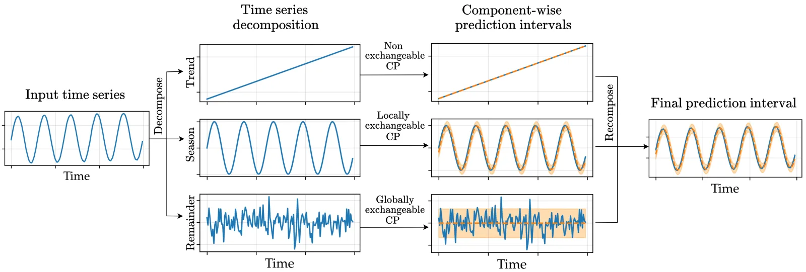

Derck Prinzhorn
AI Safety & Security
About
I'm a Founding Member of Technical Staff at Exponential Security Labs, where I evaluate and red-team frontier AI models and build benchmarks and RL environments for AI security.
I studied Artificial Intelligence at the University of Amsterdam before joining the Max Planck Institute and ELLIS Institute Tübingen as a research intern, working with Maksym Andriushchenko on AI control and white-box monitoring.
Experience
Exponential Security Labs
2026 – present
Founding Member of Technical Staff
Evaluate and red-team frontier AI models, building benchmarks and RL environments for AI security.
Research Intern
Trained model organisms for AI control and compared activation-based white-box monitoring with text-based monitors.
Aithos Research Foundation
2025 – 2026
Research Engineer
Evaluated the consistency of AI agents’ moral decisions and their ability to justify them under critical questioning.
Prinzhorn Solutions
2025 – present
Founder
Advise small and medium-sized businesses on managing AI security risks.
Wisr
2024 – 2025
Co-Founder
Led product development, customer discovery, user testing, and intern recruitment for an AI-assisted grading platform.
Dutch Police
2023 – 2025
AI Architect
Developed AI strategy and technical architectures for building and securing AI systems.
Highlighted Publications




Projects & Hackathons
Highlights / News
2026
Sep
Released papers on trace tampering and instrumental monitor evasion.
Jul
Joined Exponential Security Labs as a Founding Member of Technical Staff.
Jul
Released ResearchArena, accepted at the COLM 2026 Workshop on Agent Behavior.
Mar
Worked on Controlling the Researcher during the Apart Research AI Control Hackathon.
Jan
Started thesis research on AI control at MPI-IS and ELLIS Institute Tübingen.
2025
Jul
HIVE paper accepted at the Beyond Euclidean Workshop, ICCV 2025.
Apr
Joined Aithos for pluralistic alignment research. Founded Prinzhorn Solutions.
2024
Dec
Presented FairAC reproduction as a poster at NeurIPS 2024.
Sep
Co-founded Wisr (EdTech). Presented conformal time series paper at COPA in Milan.
Jul
Joined SPAR, working on AI control with Aryan Bhatt from Redwood Research.
May
FairAC reproducibility paper accepted at TMLR. Conformal decomposition paper accepted at COPA.
2023
Nov
Received the AmsterdamAI thesis award for uncertainty quantification in time series.
Sep
Started MSc in Artificial Intelligence at the University of Amsterdam.